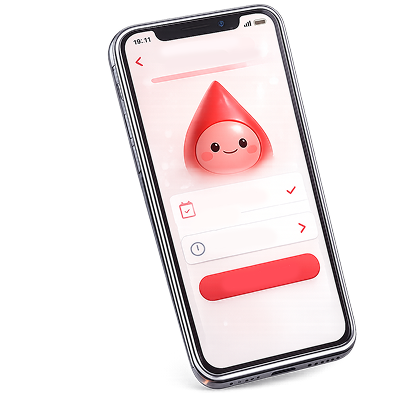
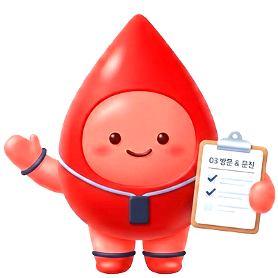
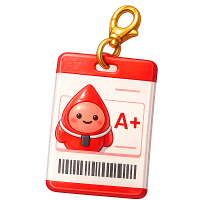
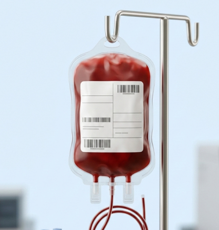

♥
혈액 나눔 이렇게 이어지고 있어요
헌혈자와 수혜자의 이야기,
그리고 생명을 잇는 손길들을 함께 나눕니다.
혈액은 보관 기간이 짧습니다.
오늘의 헌혈이 내일도 필요한 이유입니다.
처음이라도 괜찮습니다.
단 10분이면 충분합니다. 천천히 함께 시작해 볼까요?

앱 또는 웹에서 내 주변 헌혈의집을 찾고
원하는 시간에 예약합니다.
대기 없이 바로 입장 가능합니다.

신분증을 지참해 방문합니다.
간단한 건강 문진과 혈압·혈색소 측정 후
헌혈 종류를 결정합니다.

전혈 헌혈은 약 10분이 소요됩니다.
혈소판은 40~60분 소요됩니다.
헌혈 후 간식과 기념품도 받아가세요.
헌혈자와 수혜자의 이야기,
그리고 생명을 잇는 손길들을 함께 나눕니다.
나눔에 참여한 캠페인 참여자들의 SNS 입니다.
소중하고 나눔을 잇는 소중한 순간들을 함께 해요.

원하는 날짜/시간/장소에 예약 가능합니다.
나의 가장 가까운 헌혈의 집을 찾아보세요.
예약 시에는 대기 없이 바로 입장 가능합니다.